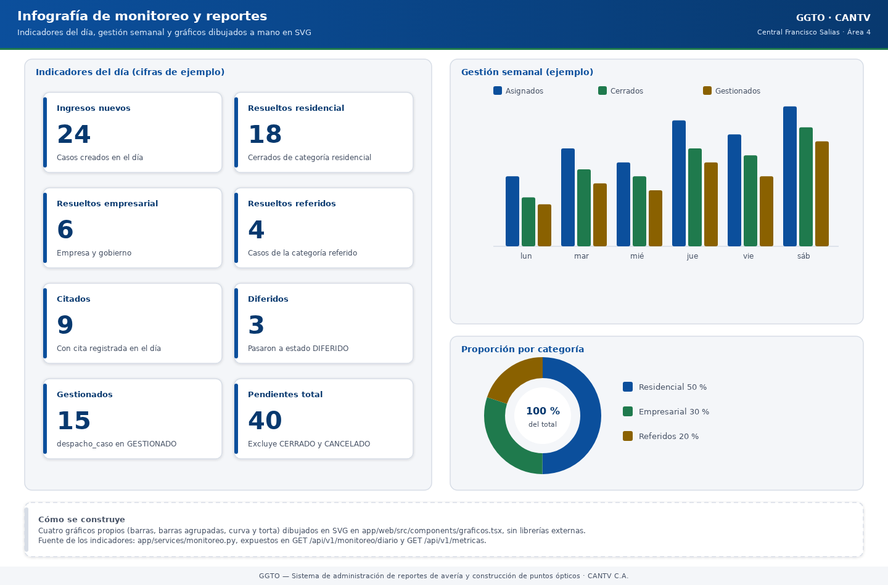

Sistema de administración de reportes de avería y construcción de puntos ópticos
Manual literal · ImplementaciónManual técnico — Monitoreo y reportes (GGTO, Ciclo 7)
Manual para todo público. Explica, en lenguaje sencillo, cómo GGTO cuenta el trabajo diario y semanal y cómo muestra esas cifras en la página MONITOREO, en sus gráficos y en el reporte de trabajo que se puede imprimir. Está dirigido a técnicos de campo, supervisores y administradores de la Central Francisco Salias (Área 4) de CANTV. Todo lo que aquí se describe corresponde al Ciclo 7 del proyecto. Cuando algo todavía no está cerrado, se indica con la frase «pendiente de confirmar».
Manual para todo público. Explica, en lenguaje sencillo, cómo GGTO cuenta el trabajo diario y semanal y cómo muestra esas cifras en la página MONITOREO, en sus gráficos y en el reporte de trabajo que se puede imprimir. Está dirigido a técnicos de campo, supervisores y administradores de la Central Francisco Salias (Área 4) de CANTV. Todo lo que aquí se describe corresponde al Ciclo 7 del proyecto. Cuando algo todavía no está cerrado, se indica con la frase «pendiente de confirmar».
1Empezar en 5 minutos
- MONITOREO es de solo lectura. Cualquier usuario con sesión válida —incluido el rol Técnico— puede consultar las cifras, pero no puede modificarlas desde aquí. La página MONITOREO del sistema muestra los tableros; no cambia datos.
- Las cifras nacen de una regla escrita. Todas las fórmulas provienen del documento normativo de métricas del proyecto (versión 1.0), que sigue pendiente de validación formal con CANTV. El sistema ya calcula con esas reglas; lo que falta es la conformidad de CANTV.
- Se cuenta en hora de Venezuela. El día va de 00:00 a 23:59:59 y la semana operativa es de lunes a sábado. El domingo es día no operativo. Los conteos son números enteros: en la versión 1 no hay promedios.
- Reparación y construcción nunca se mezclan. Un caso de construcción jamás aparece en el total de reparación, y viceversa. Esa separación está probada automáticamente.
- Existen 9 operaciones de consulta y un reporte imprimible. Siete alimentan los tableros, una entrega el reporte diario, semanal o mensual, y otra entrega ese mismo reporte como página lista para imprimir.

Código del gráfico (Mermaid)
flowchart LR
subgraph Datos["Datos que ya viven en GGTO"]
CASOS["CASOS<br/>reportados e ingresados"]
DESP["DESPACHO<br/>cuadrillas y asignaciones"]
HIST["Historial de estados<br/>cierres y diferidos"]
CITA["AGENDA<br/>citas programadas"]
end
subgraph Calculo["Motor de métricas (solo lectura)"]
DIARIO["Gestión diaria"]
SEMANAL["Gestión semanal<br/>lunes a sábado"]
GLOBAL["Casos globales"]
REPCON["Reparación y construcción"]
CUAD["Cuadrilla"]
CAP["Capacidad operativa"]
end
subgraph Salida["Lo que ve el usuario"]
PAGINA["Página MONITOREO<br/>tarjetas y gráficos"]
REPORTE["Reporte de trabajo<br/>diario / semanal / mensual"]
IMPR["Versión imprimible<br/>tamaño carta"]
end
CASOS --> DIARIO
DESP --> CUAD
HIST --> DIARIO
CITA --> DIARIO
CASOS --> GLOBAL
CASOS --> REPCON
DESP --> CAP
DIARIO --> PAGINA
SEMANAL --> PAGINA
GLOBAL --> PAGINA
REPCON --> PAGINA
CUAD --> PAGINA
CAP --> PAGINA
DIARIO --> REPORTE
GLOBAL --> REPORTE
REPORTE --> IMPR2Visión general
2.1Alcance y requerimientos
El módulo de MONITOREO y REPORTES corresponde al Ciclo 7 del plan de desarrollo. Su objetivo es alimentar los tableros y gráficos con las métricas de gestión diaria y semanal, de casos globales, de reparación, de construcción y de cuadrilla (requerimiento funcional RF-26). Además, genera el reporte de trabajo diario, semanal y mensual (requerimiento funcional RF-28). El catálogo funcional agrupa este módulo bajo las zonas MONITOREO, GRÁFICOS y REPORTES.
En la traza de decisiones del proyecto, el cierre de las métricas se registra en la decisión D-56. Esa decisión da por completado el Ciclo 7 con las métricas cerradas en el documento normativo de métricas versión 1.0 —lo que a su vez cierra los puntos S-08 y D-17—, con siete operaciones de monitoreo, el reporte diario, semanal y mensual con versión imprimible, y una página web con gráficos propios en formato SVG (dibujo vectorial que el navegador muestra nítido a cualquier tamaño). La definición de las métricas había quedado explícitamente diferida a la Fase 3 por la decisión D-17.
| Aspecto | Valor verificado |
|---|---|
| Ciclo | Ciclo 7 — MONITOREO y REPORTES |
| Requerimientos | RF-26 (tableros) y RF-28 (reporte de trabajo) |
| Documento normativo | Documento de métricas del proyecto, versión 1.0 — pendiente de validación con CANTV |
| Router (archivo de rutas) | app/api/routes_monitoreo.py, con prefijo /api/v1 |
| Servicio (lógica de cálculo) | app/services/monitoreo.py |
| Página web | app/web/src/pages/Monitoreo.tsx |
| Gráficos | SVG propios en app/web/src/components/graficos.tsx |
| Montaje del router | Se registra en el arranque de la aplicación (app/main.py) |
2.2Fuente normativa de las métricas
Todas las fórmulas implementadas provienen del documento normativo de métricas del proyecto. La cabecera de ese documento advierte que cada métrica define su fórmula, la entidad que consulta, la ventana de tiempo y el redondeo. También fija tres reglas generales:
- Todo se calcula en hora de Venezuela (
America/Caracas). - «Día» significa el día natural completo, de 00:00 a 23:59:59.
- La semana operativa es de lunes a sábado, y el domingo es día no operativo.
El módulo de servicio declara esa dependencia en su descripción interna: «Cálculo de las métricas de MONITOREO y REPORTES (ver el documento normativo de métricas)». El archivo de rutas hace lo propio e incluye además el requerimiento RF-07.
2.3Ubicación en el código
| Capa | Archivo | Responsabilidad |
|---|---|---|
| API (puerta de entrada) | app/api/routes_monitoreo.py |
9 operaciones HTTP, validación de parámetros y plantilla HTML imprimible |
| Servicio (cálculo) | app/services/monitoreo.py |
Consultas a la base de datos y armado de cada indicador |
| Esquemas (contratos de datos) | No hay un módulo de contratos dedicado: las operaciones devuelven diccionarios simples | Las funciones se anotan como -> dict |
| Tipos del frontend | app/web/src/api/types.ts |
Interfaces MonitoreoDiario…ReporteTrabajo, importadas por la página |
| Cliente web | app/web/src/api/client.ts |
Funciones monitoreoDiario…obtenerReporteTrabajoImprimible |
| Página web | app/web/src/pages/Monitoreo.tsx |
Tablero de solo lectura y formulario de reportes |
| Gráficos | app/web/src/components/graficos.tsx |
Barras, barras agrupadas, curva y torta, todo en SVG |
El archivo de rutas no define ningún rol de escritura: todas sus operaciones exigen únicamente un usuario autenticado. Por eso el módulo es de solo lectura para cualquier rol con sesión válida. Las pruebas de acceso confirman que el rol TECNICO puede consultar las siete rutas de monitoreo y el reporte.
3Métricas
3.1Gestión diaria
La función de gestión diaria devuelve el bloque correspondiente al día indicado. El sistema la expone en
GET /api/v1/monitoreo/diario y, si no se envía una fecha, usa el día de hoy.
| Indicador | Qué cuenta, en palabras |
|---|---|
ingresos_nuevos |
Casos creados en el sistema ese día |
resueltos_residencial |
Casos que pasaron al estado CERRADO ese día, de categoría RESIDENCIAL |
resueltos_empresarial |
Igual, pero de categoría EMPRESA o GOBIERNO |
resueltos_referidos |
Igual, pero de categoría REFERIDO |
citados |
Casos distintos que tuvieron una cita (AGENDA) ese día |
diferidos |
Casos que pasaron al estado DIFERIDO ese día |
gestionados |
Casos distintos con una gestión registrada en un despacho del día |
pendientes_total |
Casos cuyo estado actual no es CERRADO ni CANCELADO |
El criterio de «pendiente» está centralizado: se excluyen siempre los estados CERRADO y CANCELADO. La categoría empresarial agrupa EMPRESA y GOBIERNO. La prueba de integración verifica el bloque con 5 ingresos, 1 resuelto residencial y 4 pendientes.
3.1.1Nota sobre «gestionado»
El documento normativo define «Gestionado» como el caso que tiene al menos una gestión registrada. Al
mismo tiempo, aclara que, mientras no exista la app móvil (Ciclo 8), ese valor se aproxima usando el
estado GESTIONADO del despacho. La implementación real usa exactamente esa aproximación.
Importante: la app móvil Flutter no está desarrollada en la versión 1 y su ciclo está pospuesto. No debe documentarse como si estuviera disponible.
3.2Gestión semanal (lunes → sábado)
El cálculo de la semana obtiene el lunes a partir del día de la semana de la fecha y luego suma cinco días para llegar al sábado. La constante de días de la semana es 6. La función de gestión semanal recorre esos seis días y arma la curva.
| Indicador por día | Qué cuenta, en palabras |
|---|---|
asignados |
Casos incluidos en los despachos de ese día |
cerrados |
Casos resueltos (pasaron a CERRADO) en ese día |
gestionados |
Casos con gestión registrada en un despacho de ese día |
La respuesta devuelve desde (el lunes) y hasta (el sábado) junto con la lista de días. Una prueba verifica que siempre se devuelven exactamente seis puntos y que cada día trae sus cuatro claves. Otra prueba documenta un caso de borde: si hoy es domingo, el cierre queda fuera de la ventana de la semana.
3.3Casos globales
La función de casos globales combina los pendientes a la fecha con los resueltos dentro del rango y agrega desgloses por estado y por categoría.
| Campo | Qué muestra, en palabras |
|---|---|
pendientes |
Casos abiertos (excluye CERRADO y CANCELADO) |
resueltos |
Casos cerrados dentro del rango consultado |
total |
Suma de pendientes más resueltos |
por_estado |
Conteo agrupado por estado actual del caso |
por_categoria |
Conteo agrupado por categoría del caso |
En la API, el rango por defecto va del día 1 del mes en curso hasta hoy.
3.4Reparación
La métrica de reparación cuenta los casos pendientes que no son de construcción, separados por categoría:
| Campo | Qué cuenta, en palabras |
|---|---|
residenciales_comunes |
Pendientes de categoría RESIDENCIAL que no son construcción |
residenciales_referidos |
Pendientes de categoría REFERIDO que no son construcción |
empresariales |
Pendientes de categoría EMPRESA o GOBIERNO que no son construcción |
total |
Suma de los tres grupos anteriores |
3.5Construcción
La métrica de construcción cuenta los casos pendientes que sí son de construcción:
| Campo | Qué cuenta, en palabras |
|---|---|
residenciales |
Pendientes de construcción de categoría RESIDENCIAL |
empresariales |
Pendientes de construcción de categoría EMPRESA o GOBIERNO |
total |
Suma de ambos grupos |
Una prueba verifica que un caso de categoría EMPRESA y tipo CONSTRUCCION no se cuenta en reparación y sí se cuenta en construcción (total 1).
3.6Cuadrilla
El cálculo por cuadrilla recorre las cuadrillas de calle (las que no son de supervisor), ordenadas por código, y calcula por día y por cuadrilla tres valores: asignados, cerrados y gestionados. Luego acumula los totales. La respuesta incluye la fecha de inicio y los días considerados.
3.6.1Cálculo de «cerrados» por cuadrilla
Para contar los cerrados de una cuadrilla, el sistema cruza el historial de estados del caso con el caso, con los casos del despacho y con el despacho. Exige que el despacho sea de esa cuadrilla y de ese día y que el historial registre el paso a CERRADO con fecha del mismo día. Una prueba genera el despacho del lunes, marca un caso como gestionado y comprueba 4 asignados y 1 gestionado.
3.7Capacidad operativa
La métrica de capacidad lista las cuadrillas activas ordenadas por código y arma el detalle de cada una: integrantes vigentes (los que siguen en la cuadrilla, sin fecha de salida), la flota asociada formateada como «cantidad (estado)» y una marca que indica si la cuadrilla está completa.
| Campo agregado | Qué cuenta, en palabras |
|---|---|
cuadrillas_activas |
Cuadrillas del detalle que no son de supervisor |
tecnicos_activos |
Técnicos de la central con estado ACTIVO |
flota_disponible |
Vehículos de la central con estado DISPONIBLE |
herramientas_disponibles |
Herramientas con estado DISPONIBLE |
sectores_activos |
Sectores de la central marcados como activos |
Una prueba confirma 2 cuadrillas activas, 3 en el detalle (incluye la cuadrilla 0, que es la del supervisor) y que, cuando no hay integrantes ni flota, las cuadrillas de calle quedan marcadas como incompletas.
4Endpoints
4.1Superficie de la API
El archivo de rutas se declara con el prefijo /api/v1 y la etiqueta de documentación
«monitoreo y reportes». Expone 9 operaciones:
| Método y ruta | Para qué sirve |
|---|---|
GET /api/v1/monitoreo/diario |
Gestión diaria |
GET /api/v1/monitoreo/semanal |
Gestión semanal (curva de lunes a sábado) |
GET /api/v1/monitoreo/globales |
Casos globales: pendientes frente a resueltos |
GET /api/v1/monitoreo/reparacion |
Pendientes de reparación por tipo |
GET /api/v1/monitoreo/construccion |
Pendientes de construcción por tipo |
GET /api/v1/monitoreo/cuadrilla |
Asignados, cerrados y gestionados por cuadrilla |
GET /api/v1/monitoreo/capacidad |
Capacidad operativa |
GET /api/v1/reportes/trabajo |
Reporte de trabajo (diario, semanal o mensual) |
GET /api/v1/reportes/trabajo/imprimible |
El mismo reporte, en HTML listo para imprimir |
4.2Parámetros y resolución de la central
Todas las operaciones aceptan el identificador de central como dato opcional. Cuando no se envía, el sistema resuelve la central activa usando la configuración guardada. La sesión de base de datos y el usuario autenticado se inyectan automáticamente en cada operación.
| Endpoint | Parámetros propios | Validación |
|---|---|---|
/monitoreo/diario |
fecha, id_central |
Si no hay fecha, se usa el día de hoy |
/monitoreo/semanal |
desde, id_central |
Si no hay fecha, se usa el día de hoy |
/monitoreo/globales |
desde, hasta, id_central |
Por defecto: del día 1 del mes en curso hasta hoy |
/monitoreo/reparacion |
id_central |
— |
/monitoreo/construccion |
id_central |
— |
/monitoreo/cuadrilla |
desde, dias, id_central |
dias entre 1 y 31; por defecto 6 |
/monitoreo/capacidad |
id_central |
— |
/reportes/trabajo |
periodo, fecha, id_central |
periodo solo admite diario, semanal o mensual |
/reportes/trabajo/imprimible |
periodo, fecha, id_central |
La misma restricción de periodo |
El parámetro dias de /monitoreo/cuadrilla se usa para construir el rango de fechas. En la página web
siempre se solicita con 6 días (una semana completa, de lunes a sábado).
4.2.1Cliente web
El cliente web del frontend implementa una función por cada operación (monitoreoDiario…,
monitoreoCapacidad, reporteTrabajo y obtenerReporteTrabajoImprimible). El reporte imprimible se pide
con la credencial de sesión y se abre en una pestaña nueva, porque una dirección escrita
directamente en el navegador no puede llevar la cabecera de autorización.
5Reporte de trabajo
5.1GET /api/v1/reportes/trabajo
La función del reporte de trabajo calcula el rango según el periodo y compone un objeto con varios
bloques: periodo, desde, hasta, diario, semanal, globales, reparacion, construccion,
cuadrilla y capacidad.
| Periodo | Rango que cubre |
|---|---|
diario |
El día indicado |
semanal |
De lunes a sábado de la semana del día indicado |
mensual |
Del día 1 al último día del mes |
El rango mensual se calcula tomando el primer día del mes siguiente y restándole un día. El bloque semanal
siempre se calcula desde el lunes de la fecha, aunque el periodo sea diario o mensual. Si el periodo
no es válido, la API responde con un error de validación (HTTP 422).
Una prueba recorre los tres periodos y comprueba que estén las siete claves, que el reporte mensual empiece en el día 1 y que el semanal traiga seis días.
5.2Versión imprimible
La versión imprimible se declara como respuesta HTML. Vuelve a calcular el reporte de trabajo y usa los bloques diario, globales, reparación y construcción. Con esos datos arma filas HTML para el detalle diario, la semana, las cuadrillas y los pendientes por estado, y renderiza un documento completo con tamaño carta y estilos de impresión.
| Elemento del HTML | De dónde sale |
|---|---|
| Tarjetas: pendientes, resueltos, reparación, construcción y cuadrillas activas | Casos globales, reparación, construcción y capacidad |
| Tabla «Gestión del día» | Bloque diario |
| Tabla «Gestión semanal (lunes a sábado)» | Días del bloque semanal |
| Tabla «Producción por cuadrilla (semana)» | Cuadrillas del bloque por cuadrilla |
| Tabla «Pendientes por estado» | Desglose por estado de los casos globales |
| Botón «Imprimir» | Solo en pantalla; no se imprime |
Una prueba verifica que la respuesta sea HTML, que incluya el tamaño carta, «Reporte de trabajo» y «Gestión semanal». En la interfaz, el botón «Imprimir / PDF» obtiene el HTML y lo escribe en una ventana nueva. Si el navegador bloquea la ventana emergente, se muestra un aviso explícito al usuario.
6Reglas de cálculo
6.1Reparación y construcción excluyentes
Reparación y construcción son conjuntos separados: reparación exige que el caso no sea de construcción, y construcción exige que el caso sí sea de construcción. La regla está documentada en el documento normativo de métricas y confirmada por una prueba automática. Un caso nunca puede aparecer en los dos totales.
6.2Redondeo y zona horaria America/Caracas
El documento normativo fija las reglas transversales:
| Regla | Qué dice |
|---|---|
| Redondeo | Todos los conteos son números enteros; en la versión 1 no hay promedios |
| Zona horaria | Las fechas se interpretan en hora de Venezuela (America/Caracas); la interfaz muestra el formato día/mes/año |
| Tipos de fecha | La fecha del despacho es solo fecha; la fecha de creación del caso y la del historial incluyen hora y zona, y se recortan al día para comparar |
La implementación recorta las fechas al día en todas las comparaciones y nunca calcula promedios: todos los indicadores son conteos o sumas de conteos. El único porcentaje existe en la presentación de la torta, calculado en el navegador para mostrar cada porción, no en el servidor.
6.2.1Matiz verificado sobre la zona horaria
El documento normativo afirma que el cálculo se hace en hora de Venezuela y que el recorte de fecha es «en
la zona del servidor». El código recorta las fechas con la zona horaria configurada en la sesión de
PostgreSQL. La fijación explícita de esa zona a America/Caracas a nivel de conexión queda pendiente de
confirmar.
7Página web MONITOREO y gráficos SVG propios
7.1Estructura de la página
La página MONITOREO es un tablero de solo lectura. Al abrirse, consulta en paralelo las siete operaciones de monitoreo y un fallo parcial no anula el resto: cada bloque se guarda solo si su consulta se completó bien, y se reporta el primer error encontrado.
| Zona de la interfaz | Contenido |
|---|---|
| Parámetros de consulta | Fecha (para diario y semana) y rango de casos globales |
| Reportes | Selector de periodo, «Ver reporte» e «Imprimir / PDF» |
| Zona gestión diaria | Tarjetas y gráfico de barras |
| Zona casos globales | Tarjetas, barras de pendientes y resueltos, y tablas por estado y categoría |
| Zona gestión semanal | Curva de asignados, cerrados y gestionados, más el detalle diario |
| Zona reparación | Gráfico de torta con el total en el centro |
| Zona construcción | Tarjetas y barras |
| Zona cuadrilla | Barras agrupadas y totales por cuadrilla |
| Zona capacidad operativa | Tarjetas y detalle de cuadrillas |
El resumen del reporte muestra el periodo y el rango, y luego los bloques de gestión diaria, casos globales, reparación, construcción y capacidad operativa. Dos utilidades destacan: una calcula el lunes de la semana tratando el domingo como si fuera el día 6 hacia atrás, y otra etiqueta la curva con el día abreviado más el número.
7.2Componentes de gráficos
El módulo de gráficos implementa todo sin dependencias externas: no se usa ninguna librería de gráficos comercial; todo se dibuja con SVG y las clases de estilo del proyecto. Esto contradice la previsión D-38, que mencionaba una librería llamada Recharts. La realidad verificada es el SVG propio.
| Componente | Uso |
|---|---|
GraficoBarras |
Barras verticales con el valor encima y la etiqueta debajo |
GraficoBarrasAgrupadas |
Una serie por color dentro de cada grupo, con leyenda |
GraficoLineas |
Línea quebrada con un punto por observación y leyenda |
GraficoTorta |
Torta dibujada sobre un círculo, con leyenda y porcentajes |
Constantes de dibujo: un ancho lógico de 640, con 20 de margen superior y 60 de margen inferior. La paleta de series usa seis colores corporativos. Todos los gráficos muestran el texto «Sin datos para graficar.» cuando no hay información que representar.
7.2.1Accesibilidad y detalle
Cada gráfico se declara con el rol de imagen, para que los lectores de pantalla lo reconozcan. Los puntos de la curva llevan un texto emergente con la serie, la etiqueta y el valor; las porciones de la torta hacen lo mismo. La torta además rotula el total en el centro.
8Pruebas
8.1Cobertura del ciclo 7
El archivo de pruebas app/tests/test_monitoreo_api.py contiene 16 pruebas de integración y cubre
gestión diaria y semanal, casos globales, capacidad y reportes. La Fase 4 cerró con 169 de 169 pruebas
automáticas de pytest en verde y con 46 de 46 pruebas E2E de Playwright aprobadas; además, las
revisiones de estilo con ruff, de tipos con mypy y de tipos del frontend con tsc en modo
estricto terminaron sin hallazgos.
| Prueba | Qué valida |
|---|---|
| Gestión diaria | Ingresos, resueltos y pendientes del día |
| Gestión diaria sin datos | Un día sin registros devuelve ceros |
| Casos globales | Pendientes, resueltos, total y desgloses |
| Reparación y construcción | Que ambos conjuntos sean excluyentes |
| Capacidad operativa | Cuadrillas activas, detalle y marca de incompleta |
| Gestión semanal | Que se devuelvan seis días, de lunes a sábado |
| Monitoreo por cuadrilla | Asignados y gestionados por cuadrilla |
| Semanal y cierres | El caso de borde del domingo, fuera de la ventana |
| Reporte de trabajo | Los tres periodos y sus bloques |
| Reporte imprimible | HTML con tamaño carta y sus secciones |
| Periodo inválido | Error HTTP 422 con un periodo inválido |
| Sin token | Error HTTP 401 sin autenticación |
| Técnico puede consultar | El rol Técnico sí puede leer |
| Cita del día | Una cita incrementa el conteo de citados |
Modo de pruebas aislado. Las pruebas no tocan los datos reales: usan la variable de entorno
DB_SCHEMA para trabajar sobre esquemas separados. Las pruebas de pytest usan el esquema
ggto_test y las pruebas E2E de Playwright usan el esquema ggto_e2e. Así se evita mezclar datos de
prueba con datos de producción.
8.2Aprendizajes de la Fase 4
El informe de la Fase 4 documenta el defecto F4-03: el archivo de pruebas capturaba la fecha en el momento de cargar el módulo, de modo que una corrida que cruzaba la medianoche fallaba. Se corrigió pasando a una función que evalúa la fecha dentro de cada prueba. El defecto F4-06 fue una regresión de esa misma corrección: una variable local llamada igual que la función la tapaba y producía un error de tipo. El archivo conserva un comentario que explica ese diseño, para que no vuelva a ocurrir.
En las pruebas E2E, el guion 08-monitoreo.spec.js aportó 3 pruebas para las zonas del tablero, los
gráficos SVG y el reporte de trabajo.
9Pendiente de validación con CANTV
El documento normativo de métricas enumera tres preguntas abiertas que afectan directamente a este módulo y que no deben darse por cerradas:
| # | Pregunta abierta |
|---|---|
| 1 | ¿«Ingreso nuevo» debe contar por la fecha de creación en el sistema o por la fecha del reporte en el sistema de origen? |
| 2 | ¿La semana operativa es de lunes a sábado o de lunes a domingo? |
| 3 | Confirmar la aproximación de Gestionado mientras la app móvil no exista (Ciclo 8) |
Estado de cada punto en el código, explicado en palabras:
- La implementación actual usa la fecha de creación en el sistema.
- La implementación actual usa lunes a sábado, con la constante de seis días.
- La implementación actual aproxima Gestionado con el estado
GESTIONADOdel despacho.
Cualquier cambio en estas respuestas obligará a ajustar el servicio de cálculo, la plantilla imprimible y las pruebas del ciclo. Adicionalmente, quedan como pendiente de confirmar dos aspectos: la fijación explícita de la zona horaria de cálculo y el nombre exacto del módulo de esquemas de monitoreo (hoy no existe un módulo de contratos dedicado).